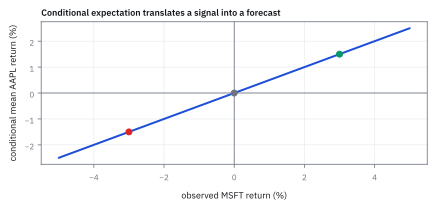
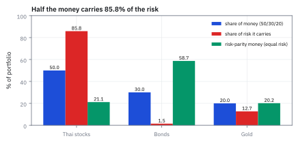

5.3 Matrix Multiplication
คูณตารางด้วยการจับคู่แถวกับคอลัมน์
พอร์ตลงเงินหุ้นไทย 50% หุ้นกู้ 30% ทองคำ 20% ความผันผวนรายตัว 18%, 6%, 15% และหุ้นกับหุ้นกู้วิ่งสวนกันเล็กน้อย หุ้นไทยแบกความเสี่ยงของพอร์ตกี่เปอร์เซ็นต์ ครึ่งหนึ่งเท่ากับเงินไหม?
เฉลย: 85.8% ทั้งที่ถือเงินแค่ครึ่งเดียว ความเสี่ยงพอร์ตคือ 9.60% ต่อปี ได้จากการคูณ covariance matrix กับน้ำหนักสองครั้ง แล้วแบ่งผลรวมกลับให้เจ้าของทีละตัว
matrix multiplication คือการต่อการแปลงสองชั้น โดยจับแถวของตัวหน้ากับคอลัมน์ของตัวหลัง งาน quant ใช้มันทุกวัน: payoff ต่อสถานการณ์ ความเสี่ยงต่อปัจจัย และความเสี่ยงของทั้งพอร์ต
ศัพท์ที่ใช้ในหัวข้อนี้
- matrix multiplication
- การคูณที่แต่ละ output element เป็น dot product ของ row แรกกับ column หลัง ใช้ map input vector ไปเป็น output vector หลายมิติ
- linear map
- function ที่รักษาการบวกและการคูณด้วย scalar ใช้แทนการเปลี่ยน positions เป็น factor exposures อย่างเป็นระบบ
- dot product
- ผลรวมของผลคูณคู่ element ใช้สร้างหนึ่ง cell ของผลลัพธ์จาก row และ column
- dimension compatibility
- เงื่อนไขที่จำนวน columns ของ matrix ซ้ายเท่ากับจำนวน rows ของ matrix ขวา ใช้ป้องกันการคูณที่ไม่มีความหมาย
- position
- จำนวนการถือครอง asset ใน portfolio ใช้เป็น input ของ risk mapping
- United States (US)
- ประเทศสหรัฐอเมริกา ใช้ระบุว่าตัวอย่าง equity และดัชนีในบทนี้มาจากตลาดสหรัฐฯ
- SPX
- ดัชนี S&P 500 ใช้เป็น market factor ของ United States (US) equity ใน mapping
สัญลักษณ์ที่ใช้ในหัวข้อนี้
| สัญลักษณ์ | ความหมาย | หน่วย |
|---|---|---|
| $A$ | factor-loading matrix | unitless loading |
| $w$ | position vector | USD million |
| $y$ | factor exposure output | USD million |
| $C=AB$ | ผลคูณของ $A$ กับ $B$ | ตามผลคูณของหน่วย input |
| $a_{ik},b_{kj}$ | elements ที่ใช้ใน output cell | ตาม matrix ที่อยู่ |
| $R$ | matrix ของ centered returns ในแต่ละช่วงเวลา | percentage return |
| $V$ | sample covariance matrix จากข้อมูลผลตอบแทนในอดีต | squared return |
ที่มาที่ไป: การคูณที่ไม่เหมือนการคูณเลข
กฎการคูณตารางไม่ได้ถูกออกแบบให้สวย แต่ถูกออกแบบให้ตรงกับการแปลงต่อกันสองทอด
ถ้าเครื่องแปลงตัวแรกเปลี่ยนน้ำหนักพอร์ตเป็นความเสี่ยงต่อปัจจัย และตัวที่สองเปลี่ยนความเสี่ยงนั้นเป็นเงิน การคูณสองตารางเข้าด้วยกันต้องให้เครื่องแปลงตัวเดียวที่ทำงานทั้งสองทอดพอดี
เงื่อนไขข้อนี้เองที่บังคับให้กฎออกมาเป็นแบบจับคู่แถวกับคอลัมน์ ไม่ใช่คูณช่องต่อช่องอย่างที่หลายคนคาด และเป็นเหตุผลที่สลับลำดับไม่ได้ เพราะการแปลงสองทอดสลับลำดับกันแล้วให้ผลคนละอย่าง
การเข้าใจว่ากฎมาจากไหน ทำให้ไม่ต้องท่องกฎอีกเลย
ความเป็นมา: จากการแทนค่าสมการซ้อนสู่ composition ของการแปลง
Jacques Philippe Marie Binet ในปี 1812 และ Arthur Cayley ในปี 1858 เป็นผู้วางรากฐานของกฎการคูณ matrix ก่อนหน้านั้น นักคณิตศาสตร์และดาราศาสตร์จัดการระบบสมการเชิงเส้นที่ต่อกันสองทอด โดยนำสมการชุดแรกไปแทนค่าในชุดที่สองทีละตัวแปร แล้วกระจายและจัดกลุ่มตัวคูณ coefficient ด้วยมือ ซึ่งใช้เวลามากและเกิดข้อผิดพลาดได้ง่าย
กฎการคูณแถวจับคอลัมน์ไม่ได้ตั้งขึ้นตามอำเภอใจ แต่เกิดจากการยุบขั้นตอน composition ของ linear transformation สองชั้นให้เหลือ matrix ผลคูณเดียว การต่อกันของการแปลงเชิงเส้นบังคับให้นิยามของแต่ละช่องในตารางผลลัพธ์ต้องเป็นผลรวมของการคูณจับคู่เสมอ
ในโลกการเงินเชิงปริมาณ การสร้าง sample covariance matrix ของสินทรัพย์นับร้อยตัว อาศัย matrix multiplication ยุบข้อมูลผลตอบแทนในอดีตนับพันช่วงเวลาให้กลายเป็นตารางความเสี่ยงครบทุกคู่พร้อมกันในคำสั่งเดียว
Worked Example — โจทย์และสิ่งที่ให้มา
โจทย์ให้อะไรมาบ้าง: ให้ $A$ มีสาม rows เป็น market, quality และ rates factor และสาม columns เป็น AAPL, MSFT และ JPM; ให้ $w$ เป็น position vector หน่วย USD million ผลลัพธ์ $y$ ต้องมีสาม factor exposures หน่วย USD million
ขั้นที่ 1 — สายพานสองเครื่อง: ลองสลับลำดับดูว่าได้ของเดิมไหม
ลองกรณีเล็กที่สุดก่อน: เครื่อง $A$ กับเครื่อง $B$ ทำงานคนละอย่าง ต่อกันสองแบบแล้วดูว่าได้กฎรวมเดียวกันไหม
ในตัวอย่างนี้ $A$ เอาค่าช่องที่สองไปบวกในช่องแรก โดยคงช่องที่สองไว้ ส่วน $B$ เพิ่มค่าช่องแรกเป็นสองเท่า โดยคงช่องที่สองไว้ ลองสลับลำดับการทำสองอย่างนี้ แล้วดูว่าคำตอบเปลี่ยนหรือไม่
$AB$ แปลว่าทำ $B$ ก่อนแล้วค่อย $A$ (อ่านจากขวาไปซ้าย เพราะ $B$ อยู่ติด input): คูณช่องแรกสองเท่าก่อน แล้วค่อยบวกช่องสองเข้าช่องแรก $B\,A$ คือกลับลำดับ
ลองกับ input $(1,1)$: $AB$ ให้ $(2\cdot1+1\cdot1,\,1)=(3,1)$ แต่ $B\,A$ ให้ $(2\cdot1+2\cdot1,\,1)=(4,1)$ ต่างกันจริง ลำดับของเครื่องจึงสำคัญ
แต่ละช่องของผลคูณคือ “แถวซ้ายจับคอลัมน์ขวา คูณตามช่องแล้วบวก” เขียนไว้ครบทุกช่องข้างบน ไม่มีช่องไหนเดา
ขั้นที่ 2 — เงื่อนไข shape
เงื่อนไขรูปร่างไม่ใช่กฎที่ต้องท่องแยกจากสูตรคูณ มันตามมาจากสูตรคูณโดยตรง เพราะสูตรนั้นมี index กลางที่ต้องวิ่งเท่ากันทั้งสองฝั่ง
เริ่มจากนิยามของช่องหนึ่งของผลคูณ ซึ่งมีผลรวมวิ่งอยู่บน index กลาง $k$
ในผลรวมนั้น $a_{ik}$ ถูกใช้ที่ $k$ และ $b_{kj}$ ก็ถูกใช้ที่ $k$ เดียวกัน index กลางจึงต้องมีอยู่ทั้งสองฝั่งพร้อมกัน ถ้าฝั่งหนึ่งมีถึง $n$ แต่อีกฝั่งมีถึง $n$ เหมือนกันก็จับคู่ได้ครบ
นับ index ที่เหลือ: ตัว $i$ วิ่งถึง $m$ จากฝั่งซ้าย ตัว $j$ วิ่งถึง $p$ จากฝั่งขวา ผลลัพธ์จึงมี $m$ แถวและ $p$ คอลัมน์ นี่คือที่มาของเงื่อนไข มิติใน ไม่ใช่กฎที่ตั้งลอย ๆ
ขั้นที่ 3 — นิยามแต่ละ cell
แต่ละช่องของผลลัพธ์คือแถวหนึ่งคูณคอลัมน์หนึ่ง ซึ่งก็คือการคูณแล้วบวกที่ทำมาแล้วในบทก่อน
cell ที่ row $i$, column $j$ ของผลคูณเกิดจากการคูณ element ตาม index กลาง $k$ แล้ว sum ทุก $k$ หน่วยคือหน่วยของ $a$ คูณหน่วยของ $b$
ขั้นที่ 4 — กติกานี้มาจากไหน: การต่อสองเครื่องเป็นตัวบังคับ
บรรทัดก่อนหน้านี้บอกว่า 'แต่ละช่องคือแถวคูณคอลัมน์' ซึ่งเป็นนิยาม ไม่ใช่คำอธิบาย คำถามที่ยังค้างคือ ทำไมต้องเป็นแบบนั้น ทำไมไม่คูณตรงช่องต่อช่องเหมือนการบวก matrix
เริ่มจากความหมายจริงของผลคูณ: $AB$ คือ matrix ของการทำงานต่อกัน คือทำ $B$ ก่อนแล้วทำ $A$ ไม่ใช่ผลคูณของตัวเลขสองก้อน แต่เป็นการประกอบสอง mapping เข้าด้วยกัน
เราไม่ต้องจำสูตรเลย แค่เขียนสิ่งที่โจทย์บอกลงไปแล้วแทนที่ $z_k$ คือผลของเครื่องแรก ส่วน $y_i$ คือผลของเครื่องที่สองที่กิน $z$ เป็น input เมื่อแทน $z_k$ ทั้งก้อนลงใน $y_i$ จะเหลือ $x_j$ ตัวเดียวคูณกับก้อนที่อยู่ในวงเล็บ
ก้อนในวงเล็บคือผลรวมของ $a_{ik}b_{kj}$ ทุกค่า $k$ และนั่นคือช่อง $(i,j)$ ของ $AB$ พอดี กติกา 'แถวคูณคอลัมน์' จึงไม่ใช่ข้อตกลงที่ใครตั้งขึ้น แต่เป็นผลลัพธ์เดียวที่เหลืออยู่ เมื่อบังคับให้ matrix แทนการทำงานต่อกัน
index $k$ ที่ถูก sum คือ index กลางที่หายไป แปลว่าเราบวกทับ index นั้นได้ก็ต่อเมื่อมันมีอยู่ทั้งสองฝั่ง นี่คือที่มาของเงื่อนไขจำนวนคอลัมน์ซ้ายเท่ากับจำนวนแถวขวา ไม่ใช่กฎที่ต้องท่องแยกอีกข้อ
ขั้นที่ 5 — ตาราง payoff คูณจำนวนหุ้น: เช็กมิติก่อนคิดเลขตัวแรก
ตลาดมีสองสภาวะ สินทรัพย์สามตัว ตาราง S บอกว่าสินทรัพย์ตัวที่ j จ่ายเท่าไรในสภาวะที่ i ถือไว้ 2, 6, 4 หน่วย ถามว่าแต่ละสภาวะได้เงินเท่าไร
มิติตรงกลางของ S กับ θ เป็น 3 เท่ากัน จึงคูณได้ และผลเป็นสองสภาวะ สภาวะละหนึ่งตัวเลข แถวแรกของ S จับกับ θ: สินทรัพย์ 1 จ่าย 2 ต่อหน่วย × 2 หน่วย = 4 สินทรัพย์ 2 ได้ 18 สินทรัพย์ 3 ได้ 28 รวม 50
บวกกันตรง ๆ ได้เพราะเป็นเงินในสภาวะเดียวกัน ถ้าสภาวะที่ 1 เกิด ได้เงินจากทั้งสามตัวพร้อมกัน นี่คือการบวกกระแสเงินสด ไม่ใช่บวกความน่าจะเป็น ลองสลับเป็น θS มิติตรงกลางเป็น 1 กับ 2 จึงไม่มีนิยามเลย
ขั้นที่ 6 — อ่านผลเดียวกันจากอีกมุม: ผลรวมถ่วงน้ำหนักของคอลัมน์
แทนที่จะไล่ทีละแถว ให้มอง θ เป็นน้ำหนักของแต่ละคอลัมน์ของ S
ได้ 50 กับ 58 เท่าเดิม เพราะเป็นเลขคณิตชุดเดียวกันแค่บวกคนละลำดับ มุมนี้บอกเรื่องสำคัญ: payoff ที่พอร์ตสร้างได้ทั้งหมดคือผลรวมถ่วงน้ำหนักของคอลัมน์ของ S เท่านั้น ไม่มีทางได้อย่างอื่น หัวข้อ 5.5 จะใช้เรื่องนี้ตัดสินว่าภาระก้อนหนึ่ง hedge ได้หรือไม่
บรรทัดล่างตรวจ identity จากหัวข้อ 5.1: คูณ S ด้วย I₃ ทุกช่องได้ค่าเดิม
ขั้นที่ 7 — ลำดับเปลี่ยนทั้งขนาดและความหมาย: vᵀv กับ vvᵀ
ใช้ vector v = (1, −2) ซึ่งคิดเป็นพอร์ต long 1 หน่วยกับ short 2 หน่วยก็ได้ คูณสองลำดับแล้วเทียบ
vᵀv เป็นแถว 1 × 2 คูณคอลัมน์ 2 × 1 ได้ตัวเลขตัวเดียว คือกำลังสองของความยาวจากหัวข้อ 4.4 เครื่องหมายลบหายไปเพราะลบคูณลบเป็นบวก พอร์ตที่ short 2 หน่วยจึงมีขนาดเท่ากับ long 2 หน่วย และ vᵀv ไม่มีทางติดลบ
vvᵀ สลับลำดับเป็นคอลัมน์ 2 × 1 คูณแถว 1 × 2 ได้ตาราง 2 × 2 คนละสิ่งกันสิ้นเชิง เกี่ยวกันแค่ผลรวมแนวทแยง 1 + 4 = 5 ตารางนี้คือหน้าตาของ covariance ที่ประมาณจากข้อมูลวันเดียวพอดี ซึ่งหัวข้อ 5.5 จะแสดงว่าทำไมมันกลับด้านไม่ได้
ขั้นที่ 8 — portfolio mapping
ความหมายจริงของการคูณคือแปลงจากภาษาหนึ่งไปอีกภาษาหนึ่ง เช่นจากน้ำหนักพอร์ตไปเป็นความเสี่ยงต่อปัจจัยแต่ละตัว
แต่ละ row ของ $A$ เป็น factor และแต่ละ column เป็น asset แถวตลาดจับ $w$: AAPL ให้ 2.0, MSFT ที่ short ให้ $-0.8$, JPM ให้ 0.6 รวม \$1.8 ล้าน ทำแบบเดียวกันอีกสองแถวได้ quality 0.3 และ rates 0.4
หน่วย: loading ไม่มีหน่วย คูณ USD million ได้ USD million ผลลัพธ์จึงอ่านเป็น “ถ้า factor ขยับ 1% พอร์ตขยับ 1% ของตัวเลขนี้”
ขั้นที่ 9 — composition ของ mappings
คูณต่อกันหลายชั้นคือการแปลงต่อกันหลายทอด สูตรข้างล่างแสดงว่าการจัดวงเล็บใหม่ไม่เปลี่ยนคำตอบ แต่ให้สังเกตว่าเราไม่เคยสลับลำดับของ $A$ กับ $B$ เลย นั่นคือสิ่งที่สลับไม่ได้ ต่างจากการจัดวงเล็บซึ่งสลับได้
คำถามคือ แปลงทีละชั้น กับคูณตารางรวมก่อนแล้วแปลงครั้งเดียว ได้ผลเท่ากันไหม วิธีตรวจคือกางออกมาทีละช่อง ผ่านชั้นแรกได้ผลรวมหนึ่งชั้น ผ่านชั้นที่สองได้ผลรวมซ้อนกันสองชั้น
จากนั้นสลับลำดับการบวกสองชั้น ทำได้เพราะเป็นการบวกจำนวนจำกัด แล้วดึง $w_j$ ออกมานอกวงเล็บใน ก้อนที่เหลือในวงเล็บตรงกับนิยามการคูณตารางจากขั้นที่ 3 ทุกตัวอักษร สองทางจึงให้ค่าเดียวกันทุกช่อง แต่สังเกตว่าเราไม่เคยสลับลำดับของ $A$ กับ $B$ เลย นั่นคือสิ่งที่สลับไม่ได้
ขั้นที่ 10 — การสร้าง covariance matrix ด้วย matrix multiplication
ตัวอย่างนี้แสดงการสร้าง covariance matrix ของ 2 สินทรัพย์จากข้อมูลผลตอบแทน 3 งวด โดย $R$ เป็น matrix ของ centered returns ขนาด $3\times 2$
เงื่อนไขมิติภายในคือจำนวนงวดเวลา $N$ ต้องตรงกัน: $R^{\mathsf T}$ ขนาด $2\times 3$ คูณกับ $R$ ขนาด $3\times 2$ ได้ผลลัพธ์ขนาด $2\times 2$ เสมอ หากข้อมูลมีช่วงเวลาไม่เท่ากันหรือมีข้อมูลสูญหาย การคูณจะไม่สามารถเกิดขึ้นได้ และหากไม่ได้ลบค่าเฉลี่ยออกก่อน ผลลัพธ์จะเป็น second moment ไม่ใช่ covariance
หัวใจเชิงปริมาณคือการรวมผลคูณของผลตอบแทนข้ามช่วงเวลา แถวของ matrix ตัวหน้าซึ่งถูก transpose จะจับคู่กับคอลัมน์ของตัวหลังตามแกนเวลาเพื่อหาผลคูณไขว้
แต่ละช่องของผลคูณ $R^{\mathsf T} R$ คือผลรวมกำลังสองและผลคูณของผลตอบแทนส่วนเกินทั้งสามงวด โดยช่องในแนวทแยงบอกผลรวมกำลังสองของแต่ละสินทรัพย์ ส่วนช่องนอกแนวทแยงบอกความสัมพันธ์ร่วมระหว่างคู่สินทรัพย์
เมื่อหารด้วยตัวหาร degrees of freedom $N-1$ จะได้ sample covariance matrix ทันที การคำนวณนี้แสดงพลังของ matrix multiplication ที่คำนวณความสัมพันธ์ของทั้งพอร์ตได้พร้อมกันอย่างเป็นระบบ
ขั้นที่ 11 — ความเสี่ยงพอร์ตจากโจทย์เปิดเรื่อง: คูณสองขั้น เริ่มจาก u = Σw
Σ คือ covariance matrix รายปีของหุ้นไทย หุ้นกู้ ทองคำ แนวทแยงคือ σ² ของแต่ละตัว นอกแนวทแยงคือ ρσᵢσⱼ ของที่โจทย์ให้คือ σ = 18%, 6%, 15% และ ρ = −0.20, 0.05, 0.25 ของคู่ (หุ้น, หุ้นกู้), (หุ้น, ทอง), (หุ้นกู้, ทอง) ความเสี่ยง wᵀΣw มีมิติ (1 × 3)(3 × 3)(3 × 1) คูณจากขวาทีละก้อน
ช่องแรกของ Σ คือ 0.18² = 0.0324 ช่องหุ้นกับหุ้นกู้คือ (−0.20)(0.18)(0.06) = −0.00216 เครื่องหมายลบมาจาก ρ ล้วน ๆ และนี่คือจุดที่การกระจายความเสี่ยงโผล่เป็นตัวเลขจริงครั้งแรก
ทำไมต้องคูณ Σw ก่อน: uᵢ มีความหมายตรงตัว คือ covariance ของสินทรัพย์ i กับผลตอบแทนของทั้งพอร์ต เพราะ Cov(Rᵢ, Σⱼ wⱼRⱼ) = Σⱼ wⱼ Cov(Rᵢ, Rⱼ) ซึ่งคือแถวที่ i ของ Σw พอดี u₂ เล็กกว่า u₁ ถึง 35 เท่า เพราะหุ้นกู้ผันผวนน้อยและวิ่งสวนหุ้นไทย สองก้อนแรกของแถวนั้นหักกันหมด
ขั้นที่ 12 — บีบ u ให้เหลือตัวเลขเดียว: σ_p = 9.60% และตรวจด้วยเก้าพจน์
คูณ wᵀ กับ u ได้ variance ของพอร์ต แล้วตรวจอีกทางด้วยการกางผลรวมสองชั้นทุกพจน์
ตรวจการถอดราก: 96² = 9,216 พอดี การกางเก้าพจน์ยุบเหลือหก เพราะช่องไขว้ของ Σ สมมาตร พจน์ไขว้จึงนับสองครั้ง เช่น 2w₁w₂ = 2(0.5)(0.3) = 0.30 การลืมเลข 2 นี้คือความผิดพลาดคลาสสิกที่ทำให้ความเสี่ยงถูกรายงานต่ำเกินจริงเมื่อ ρ เป็นบวก
9.60% ต่ำกว่าค่าเฉลี่ยถ่วงน้ำหนักของ σ รายตัว 13.8% ส่วนต่างคือกำไรจากการกระจายความเสี่ยง เพราะ σ บวกกันไม่ได้ ที่บวกได้คือ variance พร้อมพจน์ไขว้ และพจน์ไขว้จะเท่ากรณีเลวร้ายสุดก็ต่อเมื่อ ρ = 1 ทุกคู่
ขั้นที่ 13 — แบ่งความเสี่ยงกลับให้เจ้าของ: 50% ของเงิน แบก 85.8% ของความเสี่ยง
σ²_p เป็นผลรวมของสามก้อน wᵢuᵢ ก้อนละหนึ่งสินทรัพย์ หารแต่ละก้อนด้วยยอดรวมได้สัดส่วนที่แต่ละตัวรับผิดชอบ และ uᵢ/σ_p บอกว่าเพิ่มน้ำหนักตัวนั้นแล้วความเสี่ยงขยับเท่าไร
หุ้นไทยใช้เงิน 50% แต่แบกความเสี่ยง 85.8% หุ้นกู้ใช้เงิน 30% แต่แบกแค่ 1.5% สามสัดส่วนรวมได้ 100% พอดีทุกครั้ง เพราะ σ_p ขยายตามน้ำหนักแบบเชิงเส้น ผลรวมของน้ำหนักคูณ marginal จึงคืน σ_p กลับมาเสมอ บรรทัดที่สามตรวจเรื่องนี้ด้วยตัวเลข
เพิ่มหุ้นไทย 1 จุด ความเสี่ยงขึ้น 0.165 จุด เพิ่มหุ้นกู้ 1 จุดขึ้นแค่ 0.005 จุด ต่างกัน 35 เท่า บรรทัดล่างคือ risk parity: น้ำหนักที่ให้แต่ละตัวแบกเท่ากันหาด้วยการวนเชิงตัวเลข เพราะขยับ w ตัวเดียว u เปลี่ยนทุกช่อง แต่ตรวจด้วยมือได้ว่าสามก้อนเท่ากันจริง และความเสี่ยงลดเหลือ 6.10%
ตัวอย่างที่สาม — 60/40 ไม่ได้สมดุลอย่างที่ชื่อบอก
คำถาม: พอร์ต 50/30/20 มีความเสี่ยงเท่าไร แต่ละตัวแบกกี่เปอร์เซ็นต์ และถ้าจะเพิ่มน้ำหนักตัวใดตัวหนึ่ง 1 จุด ตัวไหนแพงที่สุด?
ของที่มี: Σ และ w จากขั้นที่ 11
1. u = Σw = (0.015822, 0.000450, 0.005850)
2. σ²_p = wᵀu = 0.009216 จึง σ_p = 9.60%
3 สัดส่วนความเสี่ยง 85.8% / 1.5% / 12.7% และ marginal 0.1648 / 0.0047 / 0.0609
เฉลย: หุ้นไทยใช้เงินครึ่งเดียวแต่แบกความเสี่ยงเกือบ 86% และการเพิ่มหุ้นไทย 1 จุดแพงกว่าเพิ่มหุ้นกู้ 1 จุดถึง 35 เท่า
เช็ก 10 วินาที: 0.096 × 0.096 = 0.009216 และ 85.84 + 1.46 + 12.70 = 100
งานจริง: นี่คือเหตุผลที่พอร์ตแบบ 60/40 ทั่วโลกไม่สมดุลอย่างที่ชื่อบอก เงินในตราสารหนี้แทบไม่แบกความเสี่ยง Risk Parity แก้ด้วยการปรับให้แต่ละตัวแบกเท่ากัน แล้วใช้ leverage ดันผลตอบแทนกลับขึ้นมา ข้อจำกัดคือทุกตัวเลขยืนบน Σ ที่ประมาณจากอดีต และ ρ = −0.20 คือตัวที่ไม่นิ่งที่สุด ปี 2022 หุ้นกับพันธบัตรลงพร้อมกัน ρ พลิกเป็นบวก ตัวเลข 9.60% กลายเป็นการประเมินต่ำเกินจริงทันที
กับดัก: สัดส่วนที่ใช้ σ²_p เป็นตัวหาร กับที่ใช้ uᵢ/σ_p ให้สัดส่วนเท่ากันเสมอเพราะต่างกันแค่ตัวหาร σ_p ร่วม แต่ห้ามเอา wᵢuᵢ ซึ่งมีหน่วย variance ไปเทียบกับ uᵢ/σ_p ซึ่งมีหน่วยความผันผวนตรง ๆ
โค้ดตรวจ payoff และความเสี่ยงพอร์ต
import numpy as np
S=np.array([[2,3,7],[1,6,5]]); t=np.array([2,6,4])
assert (S@t==[50,58]).all() and (t@S.T==[50,58]).all()
v=np.array([1,-2]); assert v@v==5 and (np.outer(v,v)==[[1,-2],[-2,4]]).all()
assert (S*t).shape==(2,3) # broadcast gives 6 numbers, not 2: the silent bug
Sig=np.array([[.0324,-.00216,.00135],[-.00216,.0036,.00225],[.00135,.00225,.0225]])
w=np.array([.5,.3,.2]); u=Sig@w; var=w@u
assert np.allclose(u,[.015822,.00045,.00585]) and abs(var-.009216)<1e-12
assert np.allclose(w*u/var,[.8583984,.0146484,.1269531])
assert abs((w*u/np.sqrt(var)).sum()-np.sqrt(var))<1e-12โค้ดนี้ตรวจ Sθ = (50, 58) ทั้งสองทาง vᵀv กับ vvᵀ กับดัก broadcast ที่ให้เลขหกตัวแทนสองตัว u = Σw ความเสี่ยง 0.009216 สัดส่วนความเสี่ยง และกฎที่ผลรวมของน้ำหนักคูณ marginal คืน σ_p
ขั้นที่ 14 — ตรวจด้วยเลขของตัวเอง: สองทางต้องได้ผลเท่ากัน
การต่อสองเครื่องกับการรวมก่อนคูณให้ผลเหมือนกันเสมอ แต่ไม่ควรเชื่อจนกว่าจะเห็นกับเลขเอง ตัวอย่างนี้ใช้ matrix คนละชุดกับตัวอย่างแรก เพื่อไม่ให้คำตอบถูกจำจากตัวเลขเดิม
ทางที่หนึ่งเดินตามลำดับจริง: $B$ กิน $x$ ก่อน ได้ $(1,4)$ แล้ว $A$ กินผลนั้นต่อ ได้ $(9,4)$ ทางที่สองรวมสองเครื่องเป็น $AB$ ก่อน แล้วคูณกับ $x$ ครั้งเดียว ก็ได้ $(9,4)$ เท่ากัน
ที่ต้องดูคือช่อง $(1,1)$ ของ $AB$: $1(1)+2(3)=7$ คือแถวแรกของ $A$ จับคอลัมน์แรกของ $B$ index ที่บวกทับคือ index กลางที่หายไประหว่างสองเครื่อง ซึ่งเป็น index เดียวกับในขั้นที่ 4 ไม่ใช่การคูณตรงช่อง เพราะ $1(1)$ กับ $2(0)$ อยู่ละแถวกันและต้องถูกบวกเข้าด้วยกัน
แล้วเอาไปใช้ทำอะไรได้จริงบ้าง
การคูณตารางคือการแปลงต่อกันหลายทอด ซึ่งเป็นรูปแบบของงานจริงเกือบทั้งหมด
ใช้แปลงน้ำหนักพอร์ตเป็นความเสี่ยงต่อปัจจัย แล้วแปลงต่อเป็นกำไรขาดทุนที่คาดว่าจะเกิด
ใช้ทำ stress test: 500 สถานการณ์กับพอร์ต 3,000 ตัว คือตาราง 500 × 3,000 คูณจำนวนหุ้น 3,000 × 1 ไม่มีอะไรมากกว่าขั้นที่ 5 ทำซ้ำ 500 แถว ข้อควรระวังคือความหมายของแถวกับคอลัมน์ ถ้าเผลอส่งราคาต่อหุ้นแทนจำนวนหุ้น คณิตศาสตร์ไม่รู้ มันคูณให้อย่างเดียว
ใช้รวมผลของการซื้อขายหลายรอบเข้าด้วยกัน โดยคูณ matrix ของการเปลี่ยนแปลงต่อกัน
ใช้เป็นแกนของการคำนวณทุกอย่างในไลบรารีสมัยใหม่ ซึ่งออกแบบมาให้การคูณแบบนี้เร็วที่สุด
Figure 5.3a — ทุกสถานะส่งผลถึงทุก factor

แต่ละกลุ่มคือ factor หนึ่งตัว แท่งสามสีคือ loading คูณ position ของ AAPL, MSFT และ JPM รวมกันในกลุ่มเดียวกันได้ exposure 1.8, 0.3 และ \$0.4 ล้าน ตามจุดสีดำ แท่งส้มติดลบเพราะ MSFT ถูก short 1 ล้าน
Figure 5.3b — ผลลัพธ์แต่ละช่องคือ dot product หนึ่งครั้ง

แท่งทั้งสามมาจากการจับ row หนึ่งแถวไปคูณกับขนาดของแต่ละ position แล้วบวกกัน คนละแถวได้คนละตัวเลข คือ market 1.8 quality 0.3 และ rates \$0.4 ล้าน
เพราะแต่ละแท่งมาจากแถวเดียว จึงไล่บวกเลขตรวจซ้ำได้ทีละแถวโดยไม่ต้องคำนวณทั้งตารางใหม่
Figure 5.3c — แผนที่ความร้อนของ exposure

หนึ่งคอลัมน์คือ factor profile ของ asset เดียว ส่วนหนึ่งแถวคือ loadings ของ factor เดียวทั่วทั้ง portfolio; heatmap จึงช่วยจับ label ที่สลับตำแหน่งก่อนคูณ
Figure 5.3d — เงินครึ่งหนึ่ง แบกความเสี่ยง 85.8%

แท่งน้ำเงินคือสัดส่วนเงิน 50/30/20 แท่งแดงคือสัดส่วนความเสี่ยงที่แต่ละตัวแบกจากขั้นที่ 13: หุ้นไทย 85.8% หุ้นกู้ 1.5% ทองคำ 12.7% แท่งเขียวคือน้ำหนักแบบ risk parity 21.15/58.69/20.16 ที่ทำให้สามตัวแบกเท่ากัน และความเสี่ยงพอร์ตลดจาก 9.60% เหลือ 6.10%
คำตอบ — exposure สามค่า 1.8, 0.3 และ 0.4
คำตอบ: matrix คูณ position vector ให้ factor exposure [1.8, 0.3, 0.4] USD million ตามลำดับ market, quality และ rates
ตรวจเองใน 10 วินาที: คำนวณ market row เป็น 1.0×2 + 0.8×(-1) + 0.6×1 = 1.8; quality row ได้ 0.3 และ rates row ได้ 0.4 ถ้าคำตอบมีไม่ครบสามค่า แปลว่า orientation ผิด
ใช้ตัดสินใจ: เก็บทั้ง shape, factor order และหน่วยไว้ใน risk report ถ้า A ถูกเปลี่ยนเป็น asset-by-factor ต้อง transpose ก่อนคูณ ไม่ใช่แค่สลับชื่อหลังคำนวณ
ตัวอย่างที่สอง — คำตอบและวิธีเช็ก
คำตอบ: ทั้งสองทางให้ $(9,4)$ เท่ากัน จึงเขียนโดยไม่ต้องใส่วงเล็บว่าทำอันไหนก่อน และเขียนได้เพราะการคูณ matrix คือการต่อ mapping ซึ่งกติกาในขั้นที่ 4 บังคับไว้แล้ว
ตรวจเองใน 10 วินาที: บวกเลขในของ $AB$ ดูว่า $7+2$ ตรงกับทางที่หนึ่งไหม ถ้าไม่ตรง แปลว่าจับแถวกับคอลัมน์สลับกันที่ช่องใดช่องหนึ่ง ไม่ใช่คำนวณผิด
ใช้ตัดสินใจ: ถ้าต้องรัน mapping สองชั้นบน position หลายพันตัว รวม matrix ก่อนแล้วคูณครั้งเดียว จะเร็วกว่าต่อทีละชั้น และคำตอบไม่เปลี่ยน
กับดัก: คูณ element คู่ตำแหน่งแทน dot product
การคูณ element-by-element ให้ matrix คนละชนิดกับ matrix multiplication และไม่รวม information ตาม row กับ column ตัวอย่างจากขั้นที่ 5: ถ้าส่งจำนวนหุ้นเป็นแถว 1 × 3 แทนคอลัมน์ บางภาษาจะไม่ error แต่ broadcast เป็นตาราง [[4, 18, 28], [2, 36, 20]] ได้เลขหกตัวแทนสองตัว ผิดแบบเงียบ ๆ ก่อนส่ง production ให้เช็ก shape ของผลลัพธ์ว่าเป็น 2 × 1 ไม่ใช่ 2 × 3 และทดสอบหน่วยกับค่า output จากตัวอย่างเล็กที่คำนวณมือได้
ข้อจำกัด: วิธีนี้สมมติอะไร และของจริงเป็นอย่างไร
| เรื่อง | วิธีนี้สมมติว่า | ของจริงเป็นอย่างไร | ผลที่ตามมาเวลาใช้งาน |
|---|---|---|---|
| ลำดับ | สลับลำดับได้เหมือนการคูณเลข | สลับแล้วได้คนละคำตอบ หรือคูณไม่ได้เลย | การเขียนสูตรผิดลำดับให้ตัวเลขที่ดูสมเหตุสมผลแต่ไม่มีความหมาย |
| ขนาดของงาน | คูณกี่ครั้งก็ได้ | เวลาที่ใช้โตตามกำลังสามของขนาด | พอร์ตใหญ่ต้องออกแบบลำดับการคูณให้ดี ไม่งั้นช้าจนใช้ไม่ได้ |
| ความแม่น | เลขทศนิยมแม่นเสมอ | การคูณสะสมความคลาดเคลื่อนไปเรื่อย ๆ | การคูณต่อกันหลายชั้นทำให้ผลเพี้ยนได้ โดยเฉพาะเมื่อตัวเลขต่างขนาดกันมาก |
แถวแรกคือเหตุผลที่ต้องเขียนมิติกำกับไว้ทุกครั้งเวลาพัฒนาสูตรใหม่
สรุปที่ใช้ได้จริง
- matrix multiplication คิดทีละช่อง แต่ละช่องของผลลัพธ์มาจากการจับแถวฝั่งซ้ายคูณคอลัมน์ฝั่งขวา ทีละคู่แล้วบวกรวมกัน
- shape $m\times n$ คูณ $n\times p$ ได้ $m\times p$
- $Aw$ เป็น portfolio-to-factor mapping ที่รักษาหน่วย USD million
- ตาราง payoff 2 × 3 คูณจำนวนหุ้น (2, 6, 4) ได้ (50, 58) อ่านได้ทั้งทีละแถวและเป็นผลรวมถ่วงน้ำหนักของคอลัมน์ ส่วน vᵀv = 5 เป็นตัวเลข แต่ vvᵀ เป็นตาราง 2 × 2
- ความเสี่ยงพอร์ตคือ wᵀΣw คูณสองขั้น u = Σw แล้ว wᵀu: พอร์ต 50/30/20 ได้ 9.60% และหุ้นไทยแบก 85.8% ของความเสี่ยงทั้งที่ใช้เงินครึ่งเดียว
- composition $A(Bw)=(AB)w$ ช่วยจัด pipeline หลายชั้น
- กติกาแถวคูณคอลัมน์ไม่ได้ถูกตั้งขึ้นลอย ๆ: มันคือผลของการแทน mapping ชั้นแรกลงในชั้นที่สอง index กลางที่ถูก sum จึงเป็นตัวบังคับเงื่อนไข shape ไปในตัว